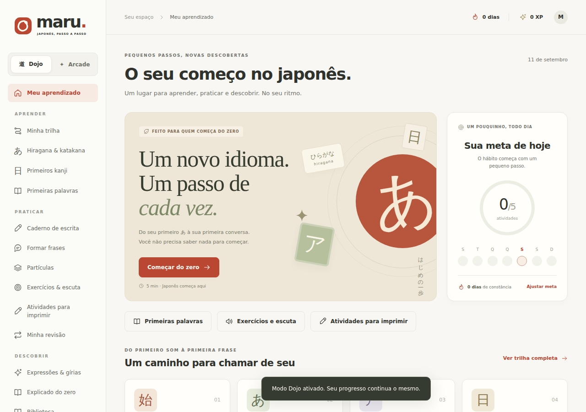
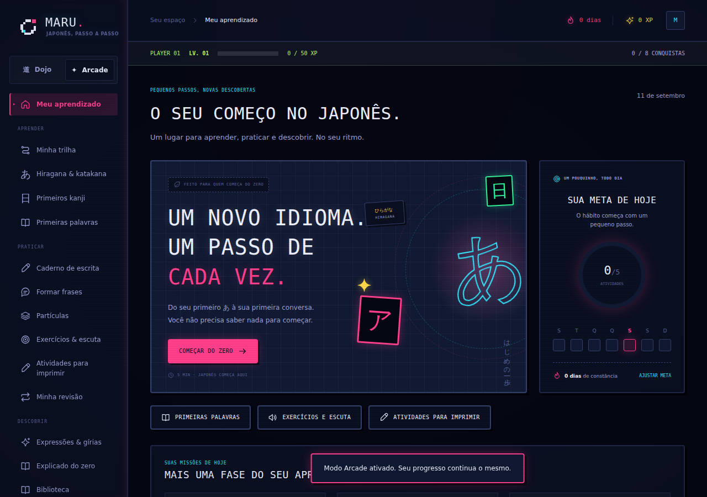
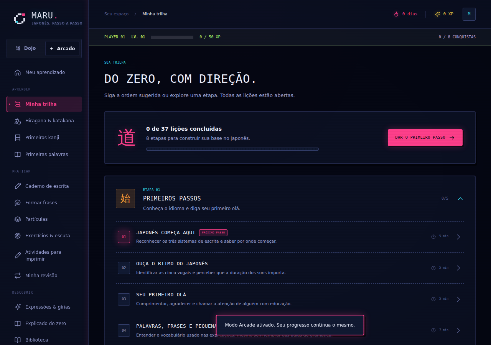
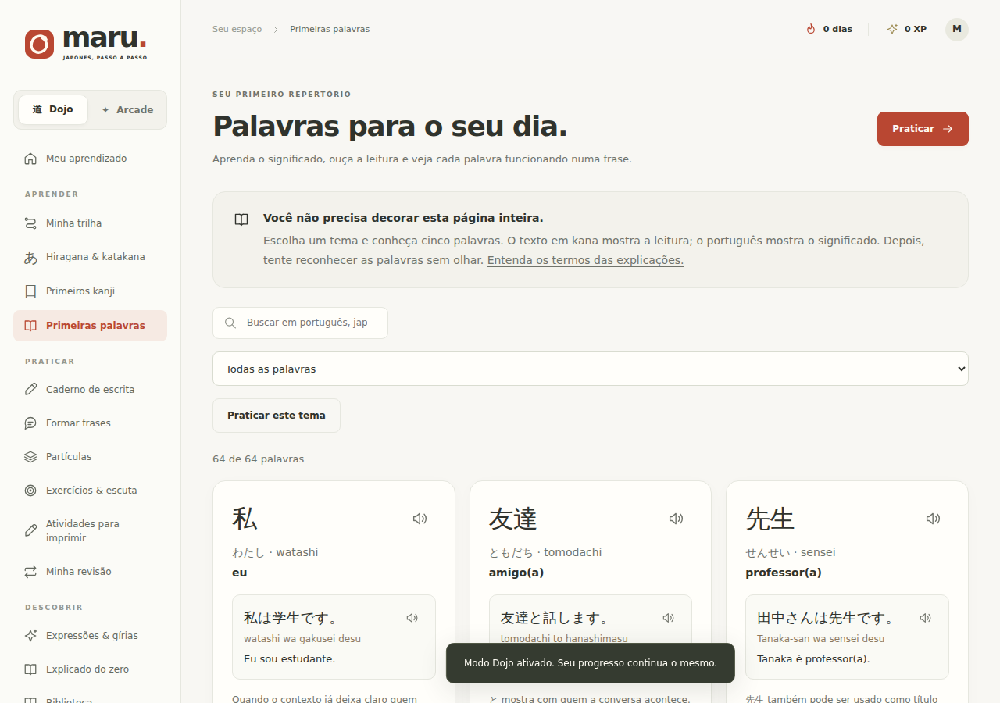
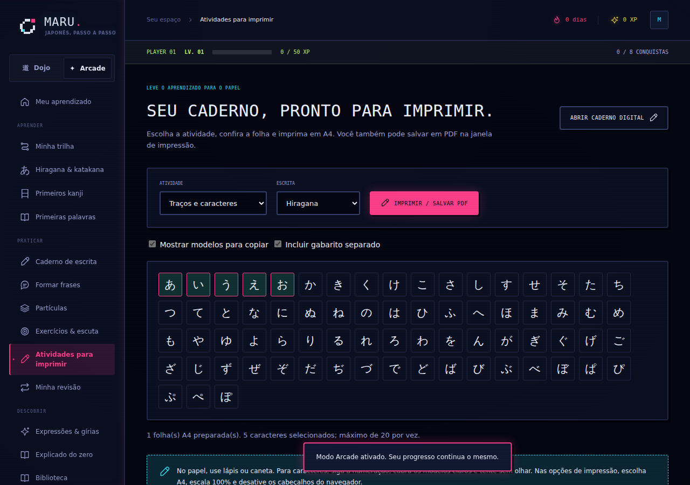
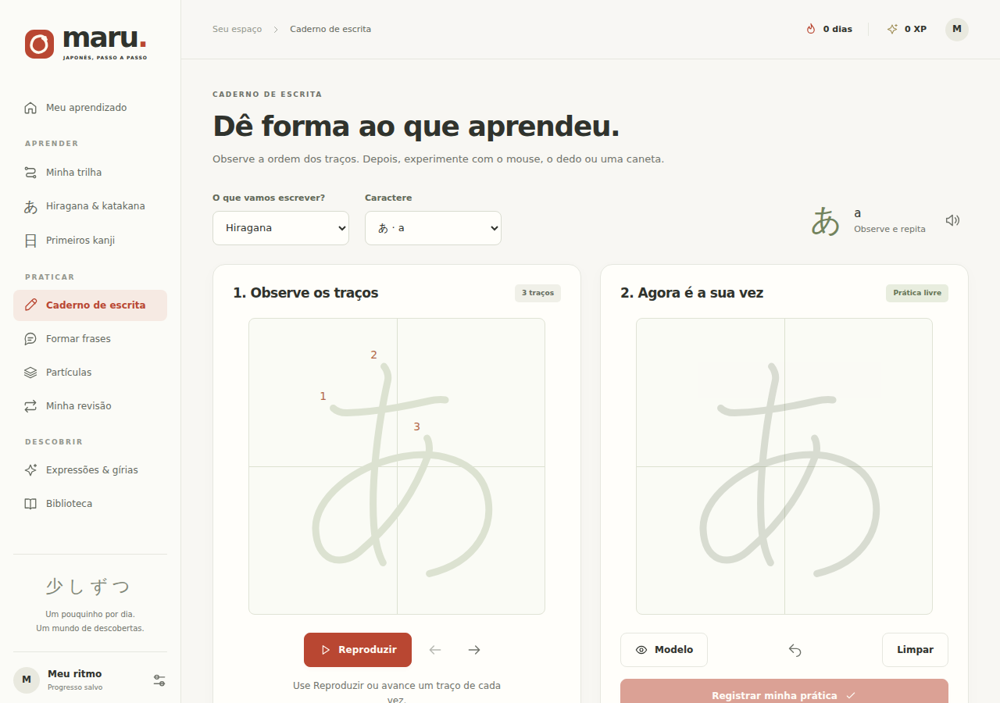

Onde o Maru está hoje
Vale começar pelo que já está de pé, porque é muito mais do que "um site em construção": o Maru já tem um motor pedagógico coerente — trilha em oito etapas, revisão espaçada de verdade (erros voltam em 10 minutos, acertos dobram o intervalo até 60 dias), prática de escrita com ordem de traços, vocabulário e exercícios de escuta com áudio real, e um verificador de frases que entende variações, não só uma resposta fixa. docs/ARCHITECTURE.md, docs/CONTENT.md e agora docs/INTEGRATIONS.md mostram que isso foi pensado com cuidado, não remendado.
O que falta não é arquitetura de conteúdo — é o entorno dela, e o entorno mudou de figura com o merge de hoje. Ainda não existe uma porta de entrada para quem já sabe alguma coisa (todo mundo começa pela lição 1, mesmo quem já estudou) — isso segue de pé, é a seção 04. Já a lacuna visual mudou: o Maru não tem mais "uma" camada visual genérica — tem duas, e elas não estão empatadas. Arcade já é distinto, com identidade própria; o Dojo, que é a primeira tela de quem nunca estudou japonês, ainda lê como painel de produtividade qualquer. A seção 07 detalha isso com o modo Arcade real, não um mockup.






No celular, o selo circular do あ na home estoura a borda do card em ambos os modos — pequeno, mas vale corrigir a contenção desse elemento antes de divulgar, independente da direção que o Dojo tomar na seção 07.
Quem usa
O site precisa funcionar bem para duas pessoas bem diferentes entrando pela mesma porta. Não são dois produtos — é a mesma trilha, com duas formas de entrar nela.
Zero absoluto
"Não sei nem por onde começar."
- O que teme
- Abrir um app cheio de tabela e desistir na primeira semana por não entender nada.
- O que a faz voltar amanhã
- Os primeiros 5 minutos já fazem sentido, sem exigir nada memorizado antes.
- Onde entra
- Botão "Começar do zero" na home → Lição 1, Primeiros passos.
Já sabe se virar
"Já estudei um pouco — não quero repetir o alfabeto."
- O que teme
- Perder tempo refazendo o básico, ou pior, cair num nível alto demais e se sentir perdida.
- O que a faz voltar amanhã
- Em poucos minutos o site já sabe mais ou menos onde ela está.
- Onde entra
- Botão "Já sei um pouco" na home → Diagnóstico → trilha com ponto de partida sugerido.
Como a pessoa entra
Os dois fluxos abaixo compartilham o mesmo destino — o dashboard, com uma meta diária — mas chegam lá de formas diferentes.
Diagnóstico de nível
A ideia não é um "teste de proficiência" com nota — é um atalho educado. De 12 a 15 perguntas de múltipla escolha, cerca de 4 minutos, cobrindo reconhecimento de kana (peso maior, já que é a base de tudo), 2 ou 3 kanji iniciais, vocabulário e partículas em contexto de frase, e uma leitura curta. O resultado aponta uma etapa da trilha — não uma lição específica, porque fingir essa precisão seria enganoso.
| Se a pessoa acerta bem… | Sugestão de entrada |
|---|---|
| Só reconhece parte do hiragana | Etapa 2 · Hiragana |
| Hiragana e katakana com confiança | Etapa 4 · Primeiros kanji |
| + alguns kanji e vocabulário básico | Etapa 5 · Construir frases |
| + frases simples e partículas comuns | Etapa 6 · Partículas |
| + partículas com segurança | Etapa 7 · Dia a dia |
Regra de design importante: o diagnóstico não marca nenhuma lição como concluída automaticamente — isso preservaria a integridade do que já existe em shared/progress.js, onde XP e sequência significam "eu realmente fiz isso". Em vez disso, a trilha ganha um marcador "sugerido para você" na etapa indicada, e as etapas anteriores ficam recolhidas como "revisão rápida, se quiser". A sugestão é sempre reversível: a pessoa navega livremente pela trilha como já funciona hoje.
Fica acessível de dois lugares: como CTA alternativo na primeira visita (ao lado de "Começar do zero"), e depois em Configurações como "Refazer diagnóstico", para quem evoluiu e quer recalibrar.
Mapa do site
A navegação atual (Aprender, Praticar, Descobrir) já é uma boa divisão — o mapa abaixo mantém essa espinha dorsal e mostra onde as peças novas encaixam.
Desde a primeira versão deste mapa, o merge da arcade-mode já adicionou duas telas reais — Primeiras palavras e Atividades para imprimir — que entram abaixo nos grupos existentes. O seletor de modo (Dojo/Arcade) não é um destino de navegação: é um controle que troca os tokens visuais de qualquer tela, sem sair dela — por isso não aparece como um nó separado.
Arquitetura de conteúdo — e como chegar a completo
A progressão em 8 etapas segue a mesma espinha dorsal — só cresceu de 25 para 37 lições com o merge de hoje, e ganhou vizinhos: vocabulário por tema, glossário de 26 termos e exercícios de escuta, todos referenciados em docs/CONTENT.md. Nenhuma dessas adições exigiu reescrever a trilha, o que é um bom sinal sobre a separação entre shared/lessons/ e o resto.
| Etapa | Lições | Resultado esperado |
|---|---|---|
| Primeiros passos | 5 | Reconhecer as escritas, perceber sons e cumprimentar. |
| Hiragana | 5 | Ler fileiras, marcas e combinações; iniciar escrita. |
| Katakana | 4 | Reconhecer empréstimos, formas parecidas e vogais longas. |
| Primeiros kanji | 4 | Relacionar significado, leitura em palavras e traços. |
| Construir frases | 5 | Apresentar-se, perguntar, negar e expressar ações. |
| Partículas | 4 | Identificar tópico, sujeito, objeto, lugar e relações. |
| Dia a dia | 5 | Pedir itens, encontrar lugares e pedir ajuda na conversa. |
| Além dos livros | 5 | Entender registro, gírias e expressões de comunidades. |
O que ainda vale adicionar são camadas que aproveitam o que já existe em shared/catalog.js e shared/vocabulary.js, sem exigir conteúdo pedagógico novo:
| Camada nova | O que é | Custo de construção |
|---|---|---|
| Cápsulas culturais | Curiosidades curtas ligadas a uma lição específica — mesmo tom editorial que já existe em "Além dos livros". | Baixo — texto novo, mesma estrutura de lição. |
| Trilhas temáticas | Recombina frases, partículas, expressões e vocabulário já existentes em pacotes por interesse: viagem, anime/mangá, trabalho. (Nome escolhido para não colidir com as "missões diárias" que já existem em shared/gamification.js.) | Baixo — camada de UI sobre catálogos existentes. |
| Banco de diagnóstico | 12–15 itens novos, cada um referenciando a etapa que representa (ver seção 04). | Médio — precisa ser escrito e calibrado. |
O tamanho real de "completo"
Vale dizer isso com números, não com sensação: os 20 kanji e as 64 palavras de hoje cobrem menos que o nível mais básico do japonês formal. Só o conjunto de kanji de uso corrente (jōyō) definido pelo governo japonês tem 2.136 caracteres. A JLPT não publica mais listas fechadas de vocabulário e kanji por nível desde 2010, mas os números que os cursinhos e livros de preparação costumam citar (não oficiais, variam por fonte — o mesmo cuidado que docs/CONTENT.md já registra) dão uma régua útil:
| Nível (referência informal) | Kanji, aprox. | Vocabulário, aprox. |
|---|---|---|
| N5 — hoje o Maru está pouco abaixo disso | ~100 | ~800 |
| N4 | ~300 | ~1.500 |
| N3 | ~650 | ~3.750 |
| N2 | ~1.000 | ~6.000 |
| N1 | ~2.000 | ~10.000+ |
Isso não é uma crítica ao que existe — é o dimensionamento honesto de "zero ao avançado" tal como você descreveu no início. "Completo" não é um estado que se alcança de uma vez; é um arco de anos de conteúdo, construído em blocos.
Uma trilha maior, em blocos
A trilha atual não precisa ser refeita — ela vira o primeiro bloco de uma sequência maior. Cada bloco novo é um conjunto de etapas adicionado quando fizer sentido, não uma meta para amanhã:
| Bloco | Onde está | O que adiciona |
|---|---|---|
| 1 — o que já existe | Pronto: 8 etapas, 37 lições | Escritas, primeiros kanji, frases básicas, partículas centrais, registro informal. |
| 2 — consolidar o básico | Proposto | Mais kanji e vocabulário por tema, conjugações verbais além do apresentado — fecha a faixa próxima ao N5/N4. |
| 3 — intermediário | Proposto | Gramática conectiva, partículas compostas, primeiros textos curtos para leitura. |
| 4 — intermediário avançado | Proposto | Leitura mais longa, contraste entre japonês formal e casual em contexto real. |
| 5 — avançado | Proposto | Nuance, registro jornalístico/literário, vocabulário abstrato. |
Mantendo o princípio que docs/CONTENT.md já deixa explícito: nenhum bloco promete certificação JLPT nem chama a biblioteca de lista oficial — os níveis aqui são só uma régua de planejamento, não uma promessa ao aluno.
Um pouco por dia — o fluxo de conteúdo
Pra "todo dia, se eu quiser" funcionar de verdade, o gargalo não pode ser lembrar o processo inteiro toda vez. Cinco peças resolvem isso:
- Backlog simples. Um arquivo (
docs/BACKLOG.mdou uma planilha) com uma linha por ideia — tipo, etapa/bloco e prioridade. Quando uma ideia aparece num dia sem tempo de escrever, ela não se perde; só entra na fila. - Script de novo conteúdo. Hoje adicionar uma lição é editar um objeto JS à mão, seguindo os 6 passos de "Acrescentar uma lição" em
docs/CONTENT.md— fácil de errar um ID ou esquecer um campo. Um script simples (scripts/new-lesson.js, no mesmo espírito descripts/check.js) que gera o esqueleto certo, com ID novo e todos os campos obrigatórios, tira o atrito de começar. - Checklist de revisão. Os critérios editoriais de
docs/CONTENT.mdjá existem — só precisam virar uma lista rápida de conferir antes de publicar (explicou a resposta? distratores do mesmo tipo? evitou equivalência literal? etc.), em vez de reler o documento inteiro toda vez. - IA como rascunho, você como editora final. Diferente da seção 10 (que é IA dentro do produto, para quem estuda) — aqui é uma ferramenta sua, pessoal, sem custo pro site: você descreve o tema e cola os critérios editoriais, a IA rascunha a lição ou o lote de vocabulário no formato esperado, e você edita, corrige e só então cola em
shared/lessons/. Reduz a parte mecânica sem tirar a curadoria de você. - Cadência sem culpa. "Todo dia se eu quiser" só se sustenta se um dia pequeno também contar — uma palavra nova, um exemplo a mais, uma entrada no backlog. O mesmo princípio da seção 08 (nunca virar pressão) vale pra quem mantém o site, não só pra quem estuda nele.
Identidade visual — Arcade já existe, o Dojo é a decisão
Isso muda o que essa seção precisa responder. Não é mais "proponha uma identidade visual para o Maru" — é frontend/assets/css/themes/arcade.css já tem 302 linhas de um segundo modo visual completo, com nome, símbolo e personalidade própria (core/theme.js define os dois: Dojo — "papel, tinta e tranquilidade" — e Arcade — "pixels, neon e novas conquistas"). A pergunta real é outra: os dois modos estão à altura um do outro?
E não é um verniz: tem sistema. Os símbolos das 8 conquistas são kanji escolhidos a dedo para cada uma (始 primeiro passo, あ vogais, 筆 escrita, 文 frase, 聞 escuta, 七 sete dias, 十 dez lições, 知 repertório), a troca de modo preserva a atividade em andamento sem recarregar, e os seletores usam :where() de propósito para não brigar com a responsividade. Duas coisas para conferir antes de divulgar: se a sobreposição de scanline (body::before, opacity .55) não pesa a leitura em telas menores, e se todo esse brilho respeita prefers-reduced-motion tanto quanto promete.
Isso deixa uma lacuna: o Dojo é a tela que a persona "Zero absoluto" vê primeiro — é o modo padrão, o nome soa mais calmo que "Arcade" para quem está com medo de abrir "um app cheio de tabela". E hoje, ao lado do Arcade, o Dojo é quem lê genérico. As duas direções abaixo não competem com o Arcade — são propostas para o Dojo ganhar a mesma força de personalidade, partindo de referências japonesas concretas. São mockups reais (mesmas fontes, mesmas cores), para comparar lado a lado.
Tinta e papel
Sumi-e, washi e o vermelho do hanko — o caminho atual do Dojo, aprofundado.
Pequenos passos
Um passo de cada
vez, como um traço
de pincel.
Começar do zero →
あ
Elegante e calma; risco de ficar parecida com o que já existe se não vier com textura de papel e um selo hanko de verdade nas conquistas do Dojo.
Caderno vivo
Genkouyoushi, adesivos, fita washi — seu caderno de verdade.
dia 1 de novo
Um caderno que
você quer abrir
de novo.
Começar do zero →
あ
A mais divertida e a que mais se presta a "não maçante" — pede mais trabalho de ilustração (adesivos, fita) para não parecer só uma paleta colorida.
Se eu tivesse que apostar: Tinta e papel tem menos risco (evolui o que já funciona, e casa com quem já chega gostando de estética japonesa) e Caderno vivo é a que melhor equilibra a energia do Arcade sem copiar o registro dele — mas nenhuma das duas está construída em código ainda, e a decisão é sua.
Motivação & progresso
Isso também avançou mais do que eu esperava. shared/gamification.js já define nível por XP (progressão em raiz quadrada, então cada nível custa mais que o anterior sem virar maratona), 8 conquistas e 3 missões diárias. As conquistas usam kanji como símbolo de cada marco — 始 primeiro passo, あ cinco vogais, 筆 primeira escrita, 文 cinco frases, 聞 cinco acertos de escuta, 七 sete dias seguidos, 十 dez lições, 知 trinta itens diferentes — o que já é uma escolha de design mais elegante do que os badges genéricos da maioria dos apps de idioma.
Vale manter os princípios que já estão implícitos no código (revisão espaçada de verdade, nada de virar teste) e somar só o que reforça sem virar pressão:
- Selos por etapa concluída da trilha — diferente das 8 conquistas atuais (que premiam habilidade: acertar, praticar, repetir), esses marcam progresso estrutural e conectam direto com a identidade visual escolhida na seção 07, por exemplo estampando o kanji de cada etapa como um hanko.
- Perdão de sequência uma vez por semana — não encontrei essa lógica em
progress.js; se realmente não existir, reduz a ansiedade de "quebrei o streak" sem esvaziar o hábito. - Nunca virar teste, nunca comparar com outras pessoas — sem ranking, sem leaderboard; nada no código sugere essa direção, e vale manter assim de propósito.
Apoie o Maru
Gratuito de verdade, apoio opcional — isso muda onde e como esse convite aparece.
- Nada é bloqueado por pagamento — nenhuma lição, prática ou kanji fica atrás de um paywall.
- Nenhum modal interrompe uma lição em andamento para pedir apoio.
- O link fica discreto: no rodapé do dashboard e dentro de Configurações — nunca no menu principal, ao lado de Aprender/Praticar/Descobrir.
A própria página de apoio deve deixar claro que o site continua de pé com ou sem contribuição. Para o público brasileiro, Pix via algo como Apoia.se costuma converter melhor que cartão recorrente; Ko-fi ou Buy Me a Coffee cobrem quem está fora do Brasil. Contribuição única ("um cafezinho") tende a combinar mais com o tom do projeto do que assinatura mensal.
Tecnologia — contas, dados e o que fica dinâmico
A parte mais arriscada disso o Maru já resolveu sem saber: shared/progress.js separa completamente a lógica de progresso (normalizar, mesclar, XP, revisão) da forma como ela é guardada — ARCHITECTURE.md é explícito sobre isso ("conteúdo e domínio compartilhados não dependem de DOM nem do servidor"). Contas de usuário não exigem reescrever nada pedagógico, só trocar a camada de persistência em backend/storage.js, que hoje grava um arquivo JSON por perfil anônimo de navegador.
Contas & login
Para um projeto mantido por uma pessoa só, a conta mais barata de operar é a que não exige guardar senha nem mandar e-mail: login com Google como porta de entrada principal. Elimina hash de senha, fluxo de "esqueci minha senha" e infraestrutura de e-mail transacional de uma vez. E-mail com link mágico (sem senha, mas com envio de e-mail) fica como alternativa de fase 2, para quem não quer vincular a conta Google — vale menos esforço adiar isso do que construir os dois de saída.
Onde guardar o progresso
Trocar arquivo JSON por SQLite é a mudança que menos briga com o resto do projeto: continua sendo um arquivo, continua sem exigir um servidor de banco separado, continua "sem build obrigatório". better-sqlite3 é a escolha mais segura hoje (Node ≥20, o mínimo atual do package.json); o módulo nativo node:sqlite resolveria sem nenhuma dependência nova, mas pede Node ≥22 — vale reavaliar quando o mínimo subir.
| Tabela | Campos principais | Para quê |
|---|---|---|
| users | id, google_id ou e-mail, criado_em | identidade da conta |
| sessions | hash do token, user_id, expira_em | login persistente sem guardar senha ou token em texto puro |
| progress | user_id ou browser_id, snapshot (JSON), atualizado_em | o mesmo formato que shared/progress.js já normaliza hoje |
Do navegador para a conta
Quando alguém cria conta ou entra num navegador que já tinha progresso anônimo, o Maru já sabe fazer exatamente essa mesclagem — é o mesmo caminho que hoje une o que está salvo no navegador com o que está salvo no servidor. Só muda o destino final da escrita.
Hospedagem
SQLite precisa de disco que sobrevive a cada deploy — então hospedagem 100% serverless (funções que somem entre requisições) não serve. Um host simples com volume persistente resolve: Fly.io ou Render têm camada gratuita ou bem barata nesse formato; uma VPS pequena (Hetzner, DigitalOcean) também funciona e dá mais controle, ao custo de mais manutenção. Vale complementar com uma cópia periódica do arquivo .sqlite para um object storage barato (Backblaze B2, por exemplo) — rede de segurança contra perda de dados, não só contra o servidor cair.
Coisas dinâmicas — onde a IA ajudaria de verdade
"Dinâmico" é amplo, então vale ancorar em lacunas que este documento já registrou, não em novidade pela novidade. O padrão de implementação seria o mesmo que já existe para VOICEVOX e KanjiAPI: o servidor chama a API, nunca o navegador — a chave nunca chega ao cliente.
| Ideia | O que resolve | Custo / risco |
|---|---|---|
| Corrigir frases livres | Hoje o verificador só compara com modelos fixos — ARCHITECTURE.md já assume isso como limite ("diferente do modelo", não "gramaticalmente impossível"). | Uma chamada por tentativa; fácil de limitar por conta/dia. |
| Exemplos extras sob demanda | Variar exemplos de uma palavra ou kanji sem precisar escrever todos à mão. | Barato, baixo risco, fácil de cortar se o custo apertar. |
| Parceiro de conversa | Hoje não existe nenhuma prática de conversa aberta, só frases guiadas por modelo. | O mais caro e o mais difícil de moderar — melhor começar em beta fechado, se for pra frente. |
| Diagnóstico adaptativo (seção 04) | Perguntas que mudam com a resposta anterior, em vez de um banco fixo. | Provavelmente não compensa — 12–15 perguntas fixas já resolvem o problema real. |
As duas primeiras (corrigir frases livres, exemplos extras) são as que eu prototiparia primeiro — custo previsível, risco baixo, e a primeira resolve uma limitação que o próprio projeto já documenta. Vale só liberar esses recursos para quem tem conta (não para uso anônimo) e colocar um limite diário por pessoa: isso também dá à conta um motivo concreto para existir, além de sincronizar entre aparelhos, e conecta direto com a seção 09 — é exatamente o tipo de custo recorrente que o apoio voluntário ajudaria a cobrir.
Roadmap
Agora
- Diagnóstico de nível (v1 simples, sem IA — tabela de pontuação)
- Escolher e aplicar uma direção visual para o Dojo (seção 07)
- Corrigir o recorte do selo circular no mobile, nos dois modos
- Página + link discreto de apoio
Em seguida
- Login com Google + SQLite + migração navegador→conta (seção 10, fase 1)
- Selos por etapa concluída (distintos das 8 conquistas atuais)
- Cápsulas culturais nas lições
- Confirmar perdão de sequência e o custo de performance do scanline do Arcade em telas fracas
Depois
- E-mail com link mágico como alternativa de login (seção 10, fase 2)
- Corrigir frases livres e gerar exemplos extras com IA, liberado só para contas (seção 10)
- Trilhas temáticas (viagem, anime, trabalho)
- Cache/offline mais robusto para VOICEVOX e KanjiAPI quando a API estiver fora do ar
Próximos passos
A única decisão que trava o resto é a direção visual do Dojo.
Tudo mais neste documento — diagnóstico, mapa do site, camadas de conteúdo, apoio, roadmap — pode ser construído aos poucos sem depender de escolher entre Tinta e papel e Caderno vivo primeiro. Mas como isso toca praticamente toda tela do modo padrão, vale escolher (ou pedir uma terceira opção, ou uma mistura das duas) antes de eu tocar no código. Este documento não alterou nada no repositório — é só o mapa antes de sair andando, agora já contando com o que o merge de hoje trouxe.